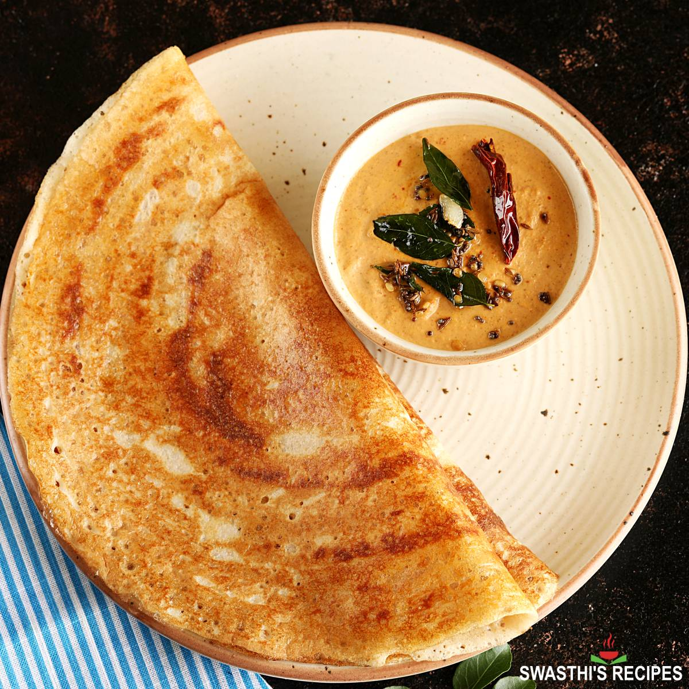

Dosa

Dosa is a popular South Indian savory crepe made from fermented rice and lentil batter, typically served with chutney and sambar.
Ingredients:
- Dosa batter (fermented rice and lentil batter)
- Oil or ghee for cooking
Steps:
- Heat a non-stick or cast-iron skillet or griddle over medium heat.
- Pour a ladleful of dosa batter onto the center of the skillet and spread it in a circular motion to form a thin layer.
- Drizzle a little oil or ghee around the edges of the dosa.
- Cook the dosa until the edges start to lift and turn golden brown.
- Flip the dosa and cook for a minute or until the other side is cooked and lightly browned.
- Remove the dosa from the skillet and serve hot with chutney and sambar.